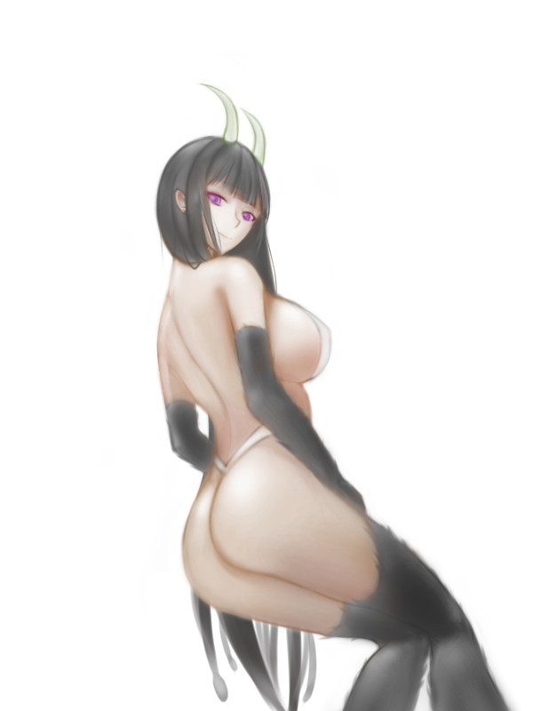
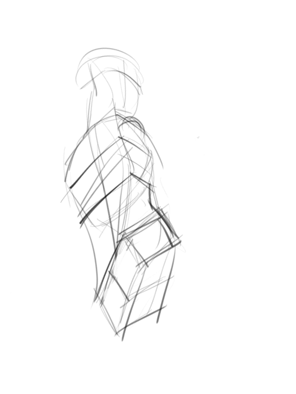

<div id="article_content" class="text-paragraph article_container">千夜姊姊RR<div>(其實找資料的時候才知道他叫千夜</div><div><br></div><div>漫畫版還沒入手</div><div>倒是本子已經...</div><div><br></div><div>總之，試著畫了!</div><div></div><div><br></div><div>這種角度不太常畫，</div><div>那個眼神&lt;3</div><div>(把我X乾吧</div><div>咳咳</div><div><br></div><div>調整蠻多次的</div><div>花的時間大概一天多一些</div><div>總之，這次過程比較完整</div><div><br></div><div>先畫方塊大概確定大致走向</div><div>然開始用噴槍，亂噴(X</div><div>用噴槍比較有彈性，</div><div>不像硬筆畫錯就會很明顯</div><div>噴槍可以先勾出外型，細畫再調整就好</div><div>調整完就一樣用覆蓋圖層上色</div><div>再做一些細節刻畫</div><div>以上!</div><div><br></div><div><div>想追蹤比較多日常還請走:<a href="https://www.facebook.com/Bushyeyebrowscat/" target="_blank"><font color="#FF0000"><font color="#FF0000">專頁</font></font></a></div><div><a href="https://www.facebook.com/Bushyeyebrowscat/" target="_blank"><font color="#FF0000"><font color="#FF0000">帽捲maochinn-繪圖坊</font></font></a></div><div><br></div><div><a href="https://www.pixiv.net/member.php?id=6856401" target="_blank"><font color="#FF0000"><font color="#FF0000">P站</font></font></a></div><div><font color="#FF0000"><a href="https://www.pixiv.net/member_illust.php?mode=medium&illust_id=66972907" target="_blank">給讚</a></font></div></div><script>
$('article.c-text img').load(function () {
// 表格內圖片大於表格寬時，設為 100%
if ($(this).parents('table').length != 0) {
if ($(this).width() >= $(this).parents('td').width()) {
$(this).width('100%');
} else {
$(this).width($(this).width() + 'px');
}
}
});
</script></div>